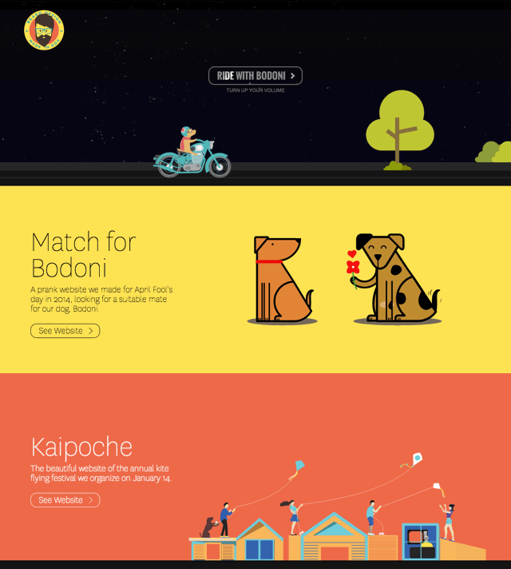
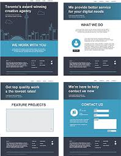

services
Wizard Web design makes professional websites that you can show off to your friends and family. We can design websites up to 6 different pages with anyhing your heart desiers. We are one simple phone call away to a perfect website within weeks!
This would be an example of a one page website. Notice how you dont need to click on any links to find other parts of the website. This makes finding all of the content a user might need on one page.

This would be an example of a multipage website. Notice how there are links that the user can click on to acess other pages of the website. This makes it easier to oraganzie information on your website.